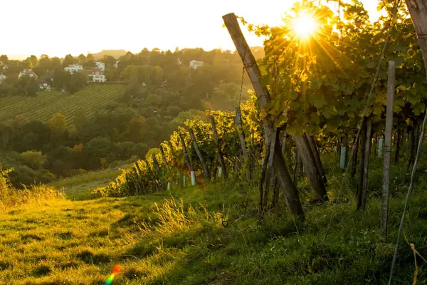

Home › Wine regions › Vienna
Vienna wine region

Photo: Philipp Stelzel on Unsplash
The only world capital with serious vineyards inside the city limits, home of the Wiener Gemischter Satz field blend.
Crisp whites led by Grüner Veltliner, organized by the DAC system.
Climate and soil
Pannonian-continental, with warm, dry summers and cool nights, moderated by the Danube and constant wind. Around 600 ha of vines: limestone and loess on the Nussberg and Kahlenberg slopes north of the river, sandier and gravelly loess on the Bisamberg, and warmer, heavier soils in the south (Mauer, Oberlaa).
Key areas and appellations
Nussberg, Grinzing, Kahlenberg, Bisamberg, Stammersdorf, Strebersdorf, Mauer, Oberlaa
Good to know
Wiener Gemischter Satz became a DAC from the 2013 vintage: white grapes from at least three varieties planted together in one Viennese vineyard and picked and fermented together, with no variety above 50% and the third at least 10%. Wine taverns called Heurige pour the growers' own young wine on the city edge.
The grapes of Vienna
- Grüner Veltliner (white): green apple, pepper, lime. Best known in Austria.
- Riesling (white): peach, lime, petrol, honey. Best known in Mosel, Alsace, Finger Lakes.
- Chardonnay (white): apple, lemon, butter, oak. Best known in Burgundy, California, Australia.
- Zweigelt (red): cherry, plum, pepper. Best known in Austria.
Notable producers in Vienna
- Weingut Wieninger
- Mayer am Pfarrplatz
- Weingut Zahel
- Weingut Christ
- Wien Cobenzl
- Fuhrgassl-Huber
- Weingut Hajszan Neumann
Official appellations
| Appellation | Status | Style | Grapes |
|---|---|---|---|
| Wiener Gemischter Satz (2013) Field-blend white from at least three varieties grown and harvested together in a Vienna vineyard. | DAC | White | Grüner Veltliner, Riesling |
Vienna wines to try
Weingut Mayer am Pfarrplatz Wiener Gemischter Satz
Vienna · Wiener Gemischter Satz DAC · Grüner Veltliner, Riesling, Pinot Blanc
A field blend from the city's own vineyards: green pear, white pepper and orchard blossom in a light, easy-drinking frame.
Food: Wiener Schnitzel, Heuriger cold cuts
Food to try with Vienna wines
- Salmon: Salmon is rich enough for a light red: low-tannin Pinot Noir won't clash with the oily fish, and creamy Chardonnay matches its texture.
- Spicy curry: A touch of sweetness and low alcohol in off-dry Riesling cool chilli heat, while fruity rosé handles aromatic spice without turning bitter.
- Roast chicken: Roast chicken is a versatile partner; lightly oaked Chardonnay or a soft, low-tannin Pinot Noir or Merlot suits crisp skin and savoury gravy.
- Cheese board: Mixed cheeses need a mixed line-up: Riesling for soft and blue cheeses, soft Merlot for hard cheeses, and Prosecco's bubbles to refresh.
- Roast turkey: Lean turkey and its many trimmings need light, fruity, fresh wines; Pinot Noir, Beaujolais or Chablis won't overpower the meat.
- Chicken Kiev: Garlic butter and crisp crumbs want a fresh white; Chablis-style Chardonnay or zesty Sauvignon Blanc cut the richness and match the herbs.
More wine regions in Austria
The Wine Reference newsletter
New wines, stories and career guides, one email a week at most.
Over 18s only. Unsubscribe any time with one click. Your email is stored securely by Kit and never shared.
Support The Wine Reference
This guide is free, with no paywall. If it helped you choose a bottle, you can buy me a glass and keep it growing.
🍷 Buy me a glass